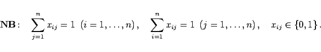

Inhalt Index DeskTop Bronstein

 Optimierung Lineare Optimierung Spezielle lineare Optimierungsprobleme
Optimierung Lineare Optimierung Spezielle lineare Optimierungsprobleme


Die Darlegung erfolgt an Hand eines Beispiels.
| Beispiel |
|
Es sollen n Transportaufträge an n Transportunternehmen so vergeben werden, daß jedes Unternehmen genau einen Auftrag erhält. Gesucht ist die kostengünstigste Zuordnung, wenn das i-te Unternehmen für die Ausführung des j-ten Auftrages die Kosten cij berechnet. |
Ein Zuordnungsproblem ist ein spezielles Transportproblem mit m = n und ai = bj = 1 für alle .
| (18.28a) |
|  | (18.28b) |
Jede zulässige Verteilungsmatrix enthält in jeder Zeile und jeder Spalte genau eine 1 und sonst Nullen. Ausgehend von einer zulässigen Verteilungsmatrix  kann das Zuordnungsproblem ohne Beachtung der Ganzzahligkeitsforderungen mit dem Transportalgorithmus gelöst werden. Dabei ist jede zulässige Basislösung (Ecke) entartet, da n - 1 Basisvariable gleich Null sind. Es sind daher Maßnahmen zur Vermeidung von Zyklen zu treffen.
kann das Zuordnungsproblem ohne Beachtung der Ganzzahligkeitsforderungen mit dem Transportalgorithmus gelöst werden. Dabei ist jede zulässige Basislösung (Ecke) entartet, da n - 1 Basisvariable gleich Null sind. Es sind daher Maßnahmen zur Vermeidung von Zyklen zu treffen.